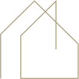
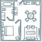

Casa colonica ristrutturata con Superbonus 110% a Barbara, terreno 6.000 m²
Barbara, Senigallia
Rif. LM290

Sei alla ricerca di un rifugio nelle Marche? A Barbara, nelle prime colline fuori Senigallia, questa casa colonica è stata completamente ristrutturata nel 2024 con il Superbonus 110%: cappotto termico, adeguamento antisismico, riscaldamento a pavimento e impianto fotovoltaico. Risparmio energetico e sicurezza strutturale al massimo livello.
La ristrutturazione ha preservato tutta l'anima del casale marchigiano: soffitti in legno, travi a vista, portico in mattoni. 150 metri quadri pensati bene, senza sprechi.
Al piano terra la zona giorno: salone con zona lettura e camino, cucina, soggiorno, bagno. Al piano superiore la zona notte: tre camere da letto, bagno e terrazzo panoramico con vista sulle colline.
Gli interni sono ancora da personalizzare con alcuni lavori finali — uno spazio libero da rendere tuo. Intorno, un terreno di 6.000 m² con corte, ulivi, piante da frutto e pozzo d'acqua privato.
-
200.000
-
Vista: aperta sulle colline
-
Anno ristrutturazione: 2024
150 m²
3 camere
2 bagni
Terreno 6.000 m²

Portico
Terrazzo panoramico
Fotovoltaico
Superfici
- 📐 Appartamento: 150 m²
- 🌳 Terreno: 6.000 m²
- 🌅 Patio: 26 m²
- ☀️ Terrazzo: 6,4 m²
Prossimità
- 🏘 Centro città: 1 km
- 🚌 Autobus: 500 m
- 🛣 Strada principale: 500 m
- 🛒 Supermercato: 5 km
- 🏥 Ospedale/Clinica: 12 km
- 🏖 Mare: 25 km
Prestazioni
- 🧱 Cappotto termico (Superbonus 110%)
- 🏗️ Adeguamento antisismico
- ☀️ Impianto fotovoltaico
- 🌡️ Riscaldamento a pavimento
- 🔥 Camino
- 🪟 Doppi vetri
- 💧 Pozzo d'acqua
- 🔒 Porta blindata
- ♿ Accesso per disabili